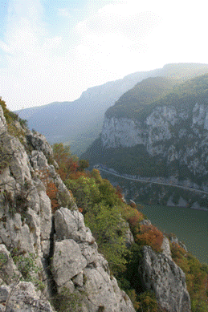
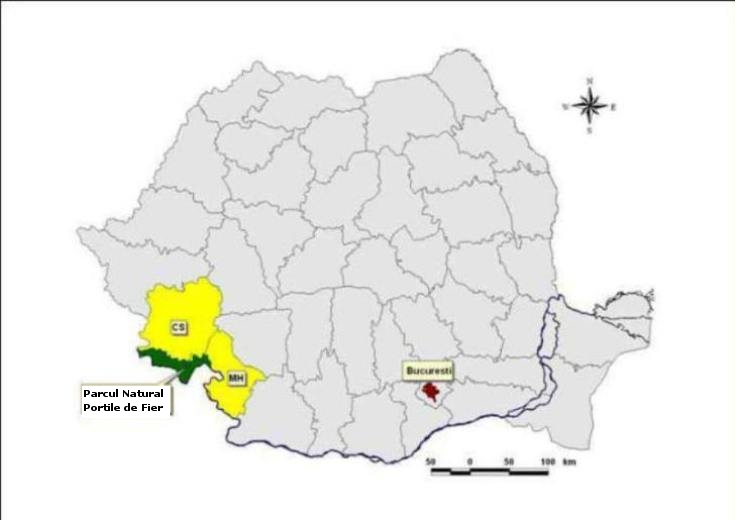
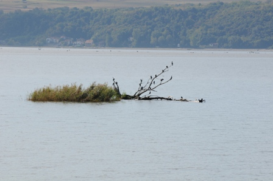
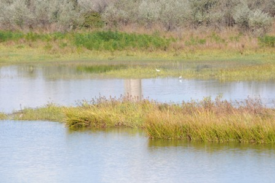
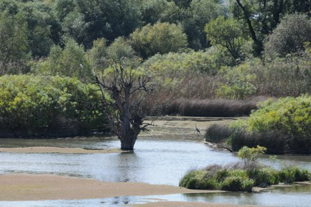
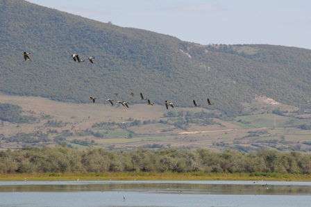
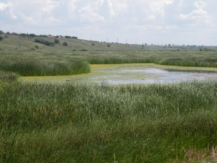
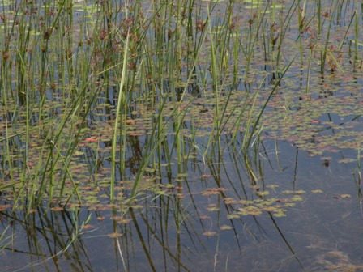
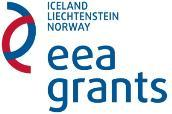

Informații generale
Ariile protejate incluse în
Parcul Natural Porţile de Fier
Parcul Natural Porţile de Fier este o arie protejată înfiinţată prin Legea nr.5/2000 privind
aprobarea
Planului de Amenajare a Teritoriului Naţional - Secţiunea a III a - Zone Protejate, ca un
teritoriu
în
care remarcabila frumuseţe a peisajelor şi diversitatea biologică pot fi valorificate în
condiţiile
păstrări nealterate a tradiţiilor, iar calitatea vieţii comunităţilor să fie rezultatul unor
activităţi
economice ale locuitorilor, deşfăşurate in armonie cu natura.
Parcul Natural Porţile de Fier corespunde categoriei V IUCN: "Peisaj protejat: arie protejată
administrată
în principal pentru conservarea peisajului şi recreere".
În conformitate cu prevederile O.U.G. 57/2007 privind regimul ariilor naturale protejate,
conservarea
habitatelor naturale, a florei si faunei sălbatice, "parcurile naturale sunt acele arii naturale
protejate
ale căror scopuri sunt protecţia şi conservarea unor ansambluri peisagistice în care
interacţiunea
activităţilor umane cu natura de-a lungul timpului a creat o zonă
distinctă, cu valoare semnificativă peisagistică şi/sau culturală deseori cu o mare diversitate
biologică".
În parcurile naturale este permisă desfăsurarea activităţilor tradiţionale practicate de
comunităţile
din
interiorul parcului şi din imediata vecinătate a acetuia.
Acestea urmăresc:
- Protecţia şi conservarea diversităţii biologice, etnofolclorice, culturale şi a elementelor de peisaj;
- Dezvoltarea unor relaţii armonioase între natură si societate, prin promovarea folosinţelor tradiţionale ale terenurilor şi resurselor teritoriale fară impact asupra mediului;
- Promovarea activităţilor turistice si de recreere;
- Încurajarea activităţilor educaţionale şi de conştientizare;
- Promovarea cercetării ştiinţifice şi a monitorizării stării mediului
- Cooperarea internaţională şi colaborarea cu Parcul Naţional Djerdap din Republica Serbia şi alte parcuri similare din ţări ale Uniunii Europene.

Parcul Natural Porţile de Fier
În conformitate cu prevederile Legii nr. 5/2000,
Ordinului nr. 552/2003 al
M.A.P.A.M.,
H.G. nr. 2151/2004
si OUG 57/2007, în Parcul Natural Porţile de Fier sunt incluse următoarele arii protejate (
rezervaţii
):
| Nr. Crt. | 1 |
|---|---|
| Denumirea ariei protejate | Balta Nera -Dunăre |
| Tipul rezervaţiei | mixtă |
| Incadrare IUCN | IV |
| Suprafaţa (ha) | 10,0 |
| Nr. Crt. | 2 |
|---|---|
| Denumirea ariei protejate | Baziaş |
| Tipul rezervaţiei | mixtă |
| Incadrare IUCN | IV |
| Suprafaţa (ha) | 170,9 |
| Nr. Crt. | 3 |
|---|---|
| Denumirea ariei protejate | Insula Calinovăţ |
| Tipul rezervaţiei | avifaunistică |
| Incadrare IUCN | IV |
| Suprafaţa (ha) | 24,0 |
| Nr. Crt. | 4 |
|---|---|
| Denumirea ariei protejate | Râpa cu lăstuni |
| Tipul rezervaţiei | mixtă |
| Incadrare IUCN | IV |
| Suprafaţa (ha) | 5,0 |
| Nr. Crt. | 5 |
|---|---|
| Denumirea ariei protejate | Divici - Pojejena |
| Tipul rezervaţiei | avifaunistică |
| Incadrare IUCN | IV |
| Suprafaţa (ha) | 498,0 |
| Nr. Crt. | 6 |
|---|---|
| Denumirea ariei protejate | Valea Mare |
| Tipul rezervaţiei | botanică |
| Incadrare IUCN | IV |
| Suprafaţa (ha) | 1179,0 |
| Nr. Crt. | 7 |
|---|---|
| Denumirea ariei protejate | Peştera cu Apă din Valea Polevii |
| Tipul rezervaţiei | mixtă |
| Incadrare IUCN | IV |
| Suprafaţa (ha) | 3,2 |
| Nr. Crt. | 8 |
|---|---|
| Denumirea ariei protejate | Ostrovul Moldova Veche |
| Tipul rezervaţiei | avifaunistică |
| Incadrare IUCN | IV |
| Suprafaţa (ha) | 1627,0 |
| Nr. Crt. | 9 |
|---|---|
| Denumirea ariei protejate | Locul fosilifer Sviniţa |
| Tipul rezervaţiei | paleontologică |
| Incadrare IUCN | III |
| Suprafaţa (ha) | 95,0 |
| Nr. Crt. | 10 |
|---|---|
| Denumirea ariei protejate | Cazanele Mari si Cazanele Mici |
| Tipul rezervaţiei | mixtă |
| Incadrare IUCN | IV |
| Suprafaţa (ha) | 215,0 |
| Nr. Crt. | 11 |
|---|---|
| Denumirea ariei protejate | Locul fosilifer Bahna |
| Tipul rezervaţiei | paleontologică |
| Incadrare IUCN | III |
| Suprafaţa (ha) | 10,0 |
| Nr. Crt. | 12 |
|---|---|
| Denumirea ariei protejate | Dealul Duhovna |
| Tipul rezervaţiei | forestieră |
| Incadrare IUCN | IV |
| Suprafaţa (ha) | 50,0 |
| Nr. Crt. | 13 |
|---|---|
| Denumirea ariei protejate | Gura Văii - Vârciorova |
| Tipul rezervaţiei | mixtă |
| Incadrare IUCN | IV |
| Suprafaţa (ha) | 305,0 |
| Nr. Crt. | 14 |
|---|---|
| Denumirea ariei protejate | Faţa Virului |
| Tipul rezervaţiei | botanică |
| Incadrare IUCN | IV |
| Suprafaţa (ha) | 6,0 |
| Nr. Crt. | 15 |
|---|---|
| Denumirea ariei protejate | Cracul Crucii |
| Tipul rezervaţiei | botanică |
| Incadrare IUCN | IV |
| Suprafaţa (ha) | 2,0 |
| Nr. Crt. | 16 |
|---|---|
| Denumirea ariei protejate | Dealul Vărănic |
| Tipul rezervaţiei | mixtă |
| Incadrare IUCN | IV |
| Suprafaţa (ha) | 350,0 |
| Nr. Crt. | 17 |
|---|---|
| Denumirea ariei protejate | Valea Oglănicului |
| Tipul rezervaţiei | botanică |
| Incadrare IUCN | IV |
| Suprafaţa (ha) | 150,0 |
| Nr. Crt. | 18 |
|---|---|
| Denumirea ariei protejate | Cracul Găioara |
| Tipul rezervaţiei | botanică |
| Incadrare IUCN | IV |
| Suprafaţa (ha) | 5,0 |
În conformitate cu H.G. 1284/2007, s-au declarat pe teritoriul Parcului Natural Porţile de Fier două
arii de
protecţie specială avifaunistică, ca parte integrantă a reţelei ecologice europene NATURA 2000 în
România,
respectiv:
-ROSPA0026 Cursul Dunării-Baziaş-Porţile de Fier, în suprafaţă de 10124.4 ha;
-ROSPA0080 Munţii Almăjului-Locvei, în suprafaţă de 118141.6 ha.
De asemenea, potrivit Ordinului Ministrului Mediului si Dezvoltarii Durabile 1964/2007 s-a declarat ca
sit
de importanţă comunitară, ROSCI0206 Porţile de Fier, parte integrantă a reţelei ecologice
europene
NATURA
2000, în suprafaţă de 124293.0 ha.
Prezenţa acestor situri NATURA 2000 implică obligativitatea aplicării prevederilor în vigoare
referitoare la
procedura de realizare a evaluarii stării de mediu pentru planuri şi programe, precum şi la procedura
cadru
de evaluare a impactului asupra mediului pentru toate planurile/programele si proiectele care urmează sa
se
desfaşoare în siturile de importanţă comunitară.
Localizare in România
Parcul Natural Porţile de Fier este situat în partea
de
sud-vest a
României, pe
malul stâng al
Dunării,
între localităţile Baziaş şi Gura Văii. In perimetrul său intră şi prelungirile sudice ale
Munţilor
Banatului (Locvei si Amăjului) şi Munţilor Mehedinţi, precum şi o parte din podişul
Mehedinţi şi
fâşia
de
lac ce aparţine tertoriului naţional.

Harta
Parcului

Documente avizare
MODEL cerere eliberare aviz APNPF:
CONŢINUTUL DOCUMENTAŢIILOR
ce
urmeazaă a
se depune de
beneficiari pentru eliberarea
avizului/acordului din partea Administraţiei Parcului Natural Porţile de Fier
sau a Consiliului Ştiinţific al Parcului Natural Porţile de Fier
A. CONSTRUCŢII / INVESTIŢII CIVILE ŞI
INDUSTRIALE
amplasate în zonele de
dezvoltare
durabilă sau în
zonele de management durabil ale Parcului Natural Porţile de Fier.
- Cerere, din partea beneficiarului lucrării, prin care se solicită eliberarea avizului.
- Act de proprietate ( titlu de proprietate, extras de carte funciară, contract de vânzare-cumparare, etc) sau de administrare a terenului (contract de concesiune, contract de folosinţă temporară, etc.), precum şi acordul proprietarului terenului (în cazul dreptului de administrare sau folosinţă temporară).
- Certificat de urbanism eliberat de autorităţile publice locale.
- Memoriu tehnic privind descrierea lucrărilor ce urmează a se efectua pentru realizarea construcţiei/investiţiei, destinaţia investiţiei, etc
- Plan de încadrare în zonă, conform PUG avizat de PNPF (art.15 şi art.21, alin.5 din OUG 57/2007) cu completarile şi modificările ulterioare.
- Plan de detaliu al construcţiei/investiţiei cu coordonatele topo ale terenului şi ale construcţiei/investiţiei.
- Studiu de geobiodiversitate, atunci când construcţia/investiţia aduce modificări peisajului natural şi este executată în zona de management durabil din arealul Parcului Natural Porţile de Fier, studiu realizat de către o persoană fizică/juridică atestată în acest sens de către autoritatea publică centrală care răspunde de protecţia mediului (art.49, alin3 din OUG 195/2005).
Din studiu trebuie să reiese modul în care realizarea construcţiei/investiţiei
influentează existenţa
speciilor şi habitatelor din arealul Parcului Natural Porţile de Fier, precum şi acţiunile
întreprinse
de beneficiarul solicitării pentru contracararea eventualelor efecte negative.
B. CARIERE DE EXPLOATARE AGREGATE
MINERALE
amplasate în zonele de dezvoltare
durabilă ale Parcului Natural Porţile de Fier.
- Cerere, din partea beneficiarului lucrării, prin care se solicită eliberarea avizului.
- Act de proprietate ( titlu de proprietate, extras de carte funciară, contract de vânzare-cumparare, etc) sau de administrare a terenului (contract de concesiune, contract de folosinţă temporară, etc.), precum şi acordul proprietarului terenului (în cazul dreptului de administrare sau folosinţă temporară).
- Certificat de urbanism eliberat de autoritatile publice locale.
- Memoriu tehnic privind descrierea lucrărilor ce urmează a se efectua pentru realizarea construcţiei/investiţiei, destinaţia investiţiei, etc.
- Plan de încadrare în zonă conform PUG avizat de PNPF (art.15 si art.21, alin.5 din OUG 57/2007) cu completarile şi modificările ulterioare.
- Plan de detaliu al construcţiei/investiţiei cu coordonatele topo ale terenului şi ale construcţiei/investiţiei.
- Studiu de geobiodiversitate realizat de către o persoană fizică/juridică atestată în acest sens de către autoritatea publică centrală care răspunde de protecţia mediului (art.49, alin3 din OUG 195/2005).
Din studiu trebuie să reiese modul în care realizarea construcţiei/investiţiei
influenţează existenţa speciilor şi habitatelor din arealul Parcului Natural Porţile de Fier, precum
şi
acţiunile întreprinse de beneficiarul solicitării pentru contracararea eventualelor efecte negative.
NOTĂ: Potrivit OUG 195/2005,
art.94,
alin (2):"
Persoanele fizice sau juridice care prospectează,
explorează sau exploatează resursele subsolului au următoarele obligaţii:
- să efectueze remedierea zonelor în care solul, subsolul şi ecosistemele terestre au fost afectate;
- să anunţe autorităţile pentru protecţia mediului sau pe cele competente, potrivit legii, despre orice situaţii accidentale care pun în pericol mediul şi să acţioneze pentru refacerea acestuia".
C. IMPLEMENTARE PROIECTE
- Cerere, din partea titularului/managerului de proiect, prin care se solicita eliberarea acordului/avizului privind implementarea proiectului.
- Documentatia proiectului cu detalierea actiunilor / activitatilor ce urmeaza a se implementa, a locatiilor acestora, a perioadei de desfasurare, etc.,
- Lista tuturor partenerilor implicati in implementarea proiectului.
- Declaraţie pe proprie răspundere a managerului de proiect din care să rezulte că:
- nu se vor efectua alte activităţi/ acţiuni decât cele specificate în proiect;
- se va pune la dispoziţia Administraţiei Parcului Natural Porţile de Fier toată baza de date şi rezultatele activităţilor de cercetare/monitorizare, cu respectarea drepturilor de autor, în vederea înaintării către autoritatea publică centrală care răspunde de protecţia mediului.
- Studiu de geobiodiversitate, atunci când activităţile propuse a se implementa aduc modificări peisajului natural sau necesită intervenţii asupra speciilor şi habitatelor din areal, studiu realizat de către o persoană fizică/juridică atestată în acest sens de către autoritatea publică centrală care răspunde de protecţia mediului (art.49, alin3 din OUG 195/2005).
Din studiu trebuie să reiese modul în care implementarea
acţiunilor/activităţilor
propuse influentează existenţa speciilor şi habitatelor din arealul Parcului Natural Porţile de
Fier,
precum şi acţiunile întreprinse de beneficiarul solicitării pentru contracararea eventualelor efecte
negative.
NOTĂ Potrivit OUG 195/2005, art.52,
alin(4):"Pentru orice proiect finanţat din fonduri comunitare este necesară obţinerea avizului
Natura
2000"
D. DESFĂŞURARE ACTIVITĂŢI CERCETARE
- Cerere prin care se solicită eliberarea acordului/avizului privind desfăşurarea activităţilor/acţiunilor de cercetare.
- Memoriu cu detalierea acţiunilor/activităţilor ce urmează a se efectua, a locaţiilor acestora, a perioadei de desfăşurare, speciile şi habitatele asupra cărora se efectuează cercetări,
- Lista tuturor partenerilor implicaţi în implementarea proiectului.
- Declaraţie pe proprie răspundere a managerului de proiect din care să rezulte că:
- nu se vor efectua alte activitati/ actiuni decit cele specificate in memoriu;
- se va pune la dispoziţia Administraţiei Parcului Natural Portile de Fier toată baza de date şi rezultatele activităţilor de cercetare/monitorizare, precum şi raportul final ( integral) al cercetării, cu respectarea drepturilor de autor, în vederea înaintării către autoritatea publică centrală care răspunde de protecţia mediului.
Tarife
prestaţii servicii
Aici
găsiţi tarifele pentru analiză solicitări (documentaţii) în
scopul
emiteri avizului (favorabil/nefavorabil) al APNPF
Aici găsiţi centralizatorul cu tarife pentru servicii prestate de catre APNPF către terţi
Aici găsiţi centralizatorul cu tarife pentru servicii prestate de catre APNPF către terţi
Anunţuri
Anunt achiziție de servicii ”Organizarea evenimentului ”Ziua
Europeana a
Parcurilor-ediția 2023 ”, Cod
7995200-2 Servicii pentru evenimente , avand o valoare estimata totala (fara TVA) de 258.000,00 lei
(fara TVA), cu respectarea cerinţelor din caietul de sarcini anexat
anunţului
si cu respectarea
prevederilor din modelul de
contract. Ofertele se vor depune la adresa din Orsova, str. Centrul Civic
nr.2, pina cel mai tarziu la data de 24.03.2023 ora 1200 potrivit specificatiilor din caietul de
sarcini.
Anunţ
public privind Servicii privind ”Cazare și catering”, în cadrul proiectului ROBG-378 ”Creating an
innovative and integrated cross-border tourist product between Vrachanski Balkan and Iron Gates
Natural
Parks”
Anunţ public
privind
organizarea în data de 19.07.2022 ora 10 :00, la sediul Administrației Parcului
Natural Porțile de Fier a examenului/concursului pentru ocuparea a unui post vacant de ranger cu
atribuții de turism pentru punctul de lucru PI Coronini , pe o perioada determinată de 4 luni (iulie
2022-octombrie 2022), în conformitate cu prevederile anexei 9, pct.4 din CCM 2021-2023, în vigoare.
Înscrierea candidaţilor, se face prin depunerea dosarelor, în conformitate cu dispoziţiile pct.8 ale
anexei 9 la CCM 2021-2023, la sediul administraţiei pâna cel mai târziu în data de 18.07.2022 orele
12:00.
Anunţ public privind
organizarea
în data de 10.05.2022 ora 10 :00, la sediul Administrației Parcului
Natural Porțile de Fier, str. Centrul Civic nr.2, a examenului/concursului pentru ocuparea a două
posturi vacante de ranger cu atribuții de turism, pentru o perioada determinată până la data de
31.10.2022, în conformitate cu prevederile anexei 9, pct.4 din CCM 2021-2023, în vigoare. Înscrierea
candidaţilor, se face prin depunerea dosarelor, în conformitate cu dispoziţiile pct.8 ale anexei 9
la
CCM 2021-2023, la sediul administraţiei pâna cel mai târziu în data de 09.05.2022 orele 12:00.
Anunţ
public privind Servicii privin ”Cursul de pregătire pentru utilizarea UAS/RPAS”, în cadrul
proiectului ROBG-378 ”Creating an innovative and integrated cross-border tourist product between
Vrachanski Balkan and Iron Gates Natural Parks”
Hotararea nr.32/29.03.2022 a
Comitetului Judetean pentru situatii de urgenta Caras Severin privind
planul de masuri pentru evitarea situatiilor generate de incendii la vegetatia uscata si in fond
forestier.
Anunt
achiziție
servicii de proiectare sisteme de securitate, Cod CPV: 79930000-2, avand o valoare
estimata totala (fara TVA) de 5700 lei, cu respectarea cerinţelor din caietul de sarcini anexat
anunţului. Ofertele se vor depune prin intermediul SICAP pana cel tarziu data de 31.01.2022 ora
1200.
Anunt achiziție servicii de curatenie si
intretinere, Cod CPV: 90910000-9;90919200-4, avand o valoare
estimata totala (fara TVA) de 24000 lei, cu respectarea cerinţelor din caietul de sarcini anexat
anunţului. Ofertele se vor depune/trimite la sediul Administrației Parcului Natural Porțile de Fier
RA,
cu sediul in Orsova, str. Centrul Civic nr.2. pana cel tarziu data de 26.01.2022 ora 1200.
Anunţ
licitatie
publica organizata in data de 17.11.2021 ora 12.00 pentru bunuri de materiale aprobate
a fi valorificate prin vanzare.
Anunt achiziție servicii audit în vederea
verificării implementării activităţilor din cadrul
proiectului, Cod CPV: 79200000-6 Servicii de contabilitate, servicii de audit şi servicii fiscale,
având
o valoare estimată totală (fără TVA) de 54.441,17 lei, cu respectarea cerinţelor din caietul de
sarcini
anexat anunţului.
Noutăţi
PARCUL NATURAL
PORŢILE
DE FIER - Sit Ramsar
Prin semnarea şi ratificarea Convenţiei, părţile semnatare au recunoscut
interdependenţa omului şi
mediului său înconjurător şi au luat în considerare funcţiile ecologice fundamentale ale zonelor
umede
ca regulatoare ale regimului apelor, ca habitate ale florei şi faunei caracteristice şi, mai ales,
ale
păsărilor de apă.De asemenea, s-a avut în vedere faptul că zonele umede constituie o resursă de mare
valoare economică, naturală, ştiinţifică şi recreativă, a căror dispariţie ar fi ireparabilă.
S-a considerat că, în fapt, conservarea zonelor umede, a florei şi faunei lor
poate
fi asigurată numai
conjugând politicile naţionale pe termen lung cu o acţiune internaţională constantă.
În sensul convenţiei semnată la Ramsar în 1971, zonele umede sunt întinderi de
bălţi, mlaştini,
turbării, de ape naturale sau artificiale, permanente sau temporare, unde apa este stătătoare sau
curgătoare, dulce, salmastră sau sărată, inclusiv întinderile de apă marină a căror adâncime la
reflux
nu depăşeşte 6 m.
Limitele sitului Ramsar se suprapun peste limitele Parcului Natural Porţile de
Fier,
aşa cum sunt ele descrise în HG 230/2003.
Parcul Natural Porţile de Fier a fost declarat sit RAMSAR îndeplinind 7 din cele
9
criterii de desemnare, după cum urmează:
Criteriul nr. 1: Situl conţine zone umede unice, rare sau reprezentative
Situl include Lacul de acumulare Porţile de Fier I şi
formaţiunile
muntoase
adiacente - Munţii Locvei
şi Munţii Almăjului, şi este caracterizat prin guri de vărsare largi ale afluenţilor
Dunării,
comunităţi
umane mici, ceea ce creează condiţii pentru menţinere ecosistemelor naturale şi
cvasinaturale.
Astfel,
întâlnim asociaţii de fraxin şi plop (Fraxineto-Populeta), dar şi comunităţi de castană de
apă
(Trapa
natans) şi peştişoară (Salvinia natans). Partea vestică a sitului este cunoscută ca fiind un
foarte
bun
habitat pentru trifoiaşul de baltă (Marsilea quadrifolia). Prezenţa suprafeţelor întinse în
care
se
găsesc comunităţi de trestie (Phragmites spp.) şi stuf (Typha spp.) asigură condiţiile
pentru
reproducere, cuibărit şi hrană a numeroase specii de păsări. În arealul sitului se găsesc 34
de
tipuri
de habitate, prezente pe anexele Directivei Europene Habitate, Floră, Faună.

Criteriul nr. 2: O zonă umedă poate fi considerată de importanţă internaţională dacă poate asigura condiţii de existenţa a unor specii critic periclitate, periclitate sau vulnerabile sau comunităţi ecologice ameninţate.
Situl include numeroase specii protejate de legislaţia
naţională şi
comunitară,
privind ariile
protejate, precum şi specii care fac obiectul de protecţie a numeroas Convenţii
internaţionale
(Berna,
Bonn, Washington): vidra (Lutra lutra), raţa roşie (Aythya nyroca), cârstelul de câmp (Crex
crex),
acvila de munte (Aquila heliaca), ţestoasa de apă (Emys orbicularis), ţestoasa de uscat
(Testudo
hermanni), cormoranul mic (Phalacrocorax pygmaeus) etc.

Criteriul nr. 3: O zonă umedă poate fi considerată de importanţă internaţională dacă poate susţine populaţii de plante şi animale importante pentru menţinerea diversităţii biologice dintr-o anumită regiune biogeografică.
Principalele caracteristici ale Parcului Natural Porţile de
Fier sunt:
diversitate
fitocenologică, asociaţii vegetale diverse care dau vegetaţiei un aspect de mozaic,
frecvente
schimbări
între zonele şi etajele vegetaţiei, în strânsă legătură cu expoziţie versantului, văi largi
, precum
şi
pereţi abrupţi. Aspectele ecologice permit conservarea unor elemente de floră şi faună
cuaternare şi
precuaternare. Defileul Dunării este de asemenea pricnipalul coridor de migraţiune pentru
diferit
specii
de plante şi animale.

Criteriul 4: O zonă poate fi considerată de importanţă internaţională dacă poate susţine specii de animale şi plante, într-un anumit stadiu critic al evoluţiei ontogenetice sau poate asigura refugiu în condiţii neprielnice.
Foarte multe specii de păsări sunt întâlnite în acest sit în
timpul
migraţiilor,
care folosesc zona
atât pentru reproducere, cuibărit şi creştere a puilor, dar şi pentru odihnă şi hrană:
cârstelul de
câmp
- Crex crex, gârliţa mare - Anser albifrons, sitar de pădure - Scolopax rusticola, fluierar
negru -
Tringa erithropus, - nagâţ - Vanellus vanellus, ghionoaie sură - Picus canus, stârc pitic -
Ixobrychus
minutus, codalbul - Haliaeetus albicilla, becaţină comună - Gallinago gallinago, egretă mare
-
Egretta
alba, erete vânăt - Circus cyaneus.
Mamiferele, precum ursul brun - Ursus arctos, râsul - Lynx lynx, vidra - Lutra lutra, găsesc
aici
condiţii optime pentru reproducere şi protecţie împotriva vânătorilor, situl fiind
înconjurat de
fonduri
pentru vânătoare.

Criteriul nr. 5: O zonă umedă poate fi considerată de importanţă internaţională dacă în mod obişnuit asigură condiţii optime pentru peste 20000 de păsări acvatice.
210 specii de păsări, din totalul de 500 specii cunoscute la nivele european, se
întâlnesc aici, fie ca specii sedentare, cuibăritoare sau în pasaj.
Criteriul nr. 7 O zonă umedă poate fi considerată de importanţă internaţională dacă poate asigura condiţiile necesare pentru un important procent de subspecii, specii sau familii de peşti autohtoni, în diferite stadii ale ciclului de viaţă, pentru relaţiile interspecifice şi/sau pentru populaţiile reprezentative care aduc şi dau beneficii şi/sau valori zonelor umede şi care implicit contribuie la diversitatea biologică globală.
Ichtiofauna Parcului Natural Porţile de Fier este foarte bine
reprezentată în întreg bazinul
Dunării.
46 de specii de păsări, multe din ele menţionate pe Lista Roşie IUCN sau în anexele
Directivei
Habitate,
întâlnesc aici condiţii prielnice pentru existenţă şi dezvoltare.

Criteriul nr. 8: O zonă umedă poate fi considerată de importanţă internaţională dacă reprezintă o importantă sursă trofică pentru peşti, pentru depunerea icrelor acestora, creşterii alevinilor şi/sau pentru efectuarea migraţiilor înspre sau dinspre zonele umede.
Din întreg arealul sitului Ramsar, un special interes îl
constituie
Lacul de
Acumulare Porţile de Fier
I. potrivit cercetărilor desfăşurate în acest sit, lacul reprezintă o adevărată "pepinieră"
pentru
Acipenser ruthenus.

Stadiu proiecte
Proiect SEE

RNP Romsilva-Administrația Parcului Natural Porțile
de Fier RA,
cu sediul în județul Mehedinți,
mun.Orșova, str.Banatului nr.92 are in derulare urmatorul proiect:
"Măsuri de conservare a ecosistemelor de pădure și
de zone umede din arealul Parcului Natural Porțile
de Fier" finanțat în cadrul programului RO02 - 'Biodiversitate și servicii ale ecosistemelor', Apelul
pentru propuneri de proiecte nr. 3 finanțat prin Mecanismul Financiar al
Spațiului Economic European
(SEE) 2009-2014
Informații publice
- Hotărârii Comitet Director
- 2022
- Hotărâre C.D. nr. 223 din 13.01.2022
- Hotărâre C.D. nr. 224 din 09.02.2022
- Hotărâre C.D. nr. 225 din 09.03.2022
- Hotărâre C.D. nr. 225 din 09.03.2022
- Hotărâre C.D. nr. 226 din 30.03.2022
- Hotărâre C.D. nr. 227 din 15.04.2022
- Hotărâre C.D. nr. 228 din 27.04.2022
- Hotărâre C.D. nr. 229 din 09.05.2022
- Hotărâre C.D. nr. 229 din 09.05.2022
- Hotărâre C.D. nr. 231 din 30.05.2022
- Hotărâre C.D. nr. 232 din 14.06.2022
- Hotărâre C.D. nr. 233 din 21.06.2022
- Hotărâre C.D. nr. 234 din 11.08.2022
- Hotărâre C.D. nr. 235 din 12.09.2022
- Hotărâre C.D. nr. 236 din 30.09.2022
- Hotărâre C.D. nr. 237 din 10.10.2022
- Hotărâre C.D. nr. 238 din 14.11.2022
- Hotărâre C.D. nr. 239 din 09.12.2022
- 2023
- Hotărâre C.D. nr. 240 din 10.01.2023
- Hotărâre C.D. nr. 241 din 08.02.2023
- Hotărâre C.D. nr. 242 din 13.03.2023
- 2022
- Situații financiare anuale
-
Raportări contabile semestriale
- Situații financiare întocmite la 30.06.2020
- Situații financiare întocmite la 30.06.2021
- Situații financiare întocmite la 30.06.2022
- Rapoarte de audit anual
-
Comitet Director
- Componență Comitet Director
- C.V. membrilor Comitetului Director
- ing. Jiplea Marian Constantin - Presedinte
- ec. Preda Alexandru Dumitru - Membru
- ing. Toboiu Viorel Catalin - Membru
- c.j. Popa Nicolae - Alin - Membru
- ing. Baratky Felix - Membru